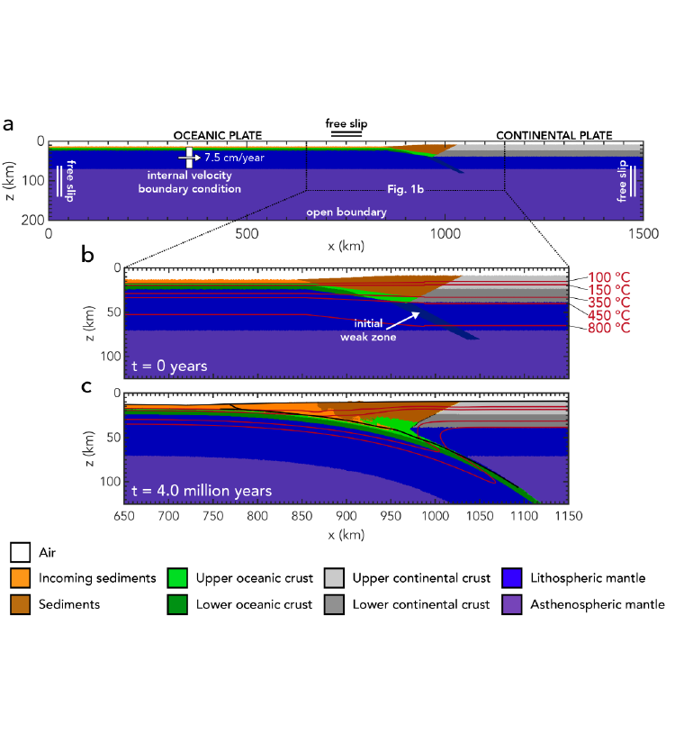
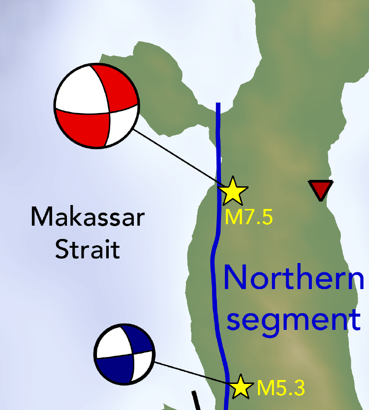

Completed Research Projects
-

Methods for earthquake - tsunami simulations
We developed a framework in the ASCETE project that coupled a subduction zone seismic cycle model to a dynamic rupture model of a single earthquake, to a tsunami propagation and inundation model. Elizabeth Madden (LMU Munich, Munich, Germany) is taking the lead on this project. Published in GJI.
-
Mega-earthquakes & sediment thickness
Brizzi et al., (Tectonophysics 2018) found that subduction mega-earthquakes favour long subduction zones with high sediment supply. They used multivariate statistics on a global subduction zone characteristics database. To further assess the correlation and possible causality between mega-earthquakes and sediment thickness at the trench, numerical models are developed for a parameter study into sediment thickness in subduction zones. This project is in collaboration with Silvia Brizzi (first author), and Francesca Funiciello (Roma Tre University, Rome, Italy). Published in JGR: Solid Earth.
-

Modelling subduction and earthquake dynamics
We couple a geodynamic seismic cycle model to a dynamic rupture model to resolve subduction and earthquake dynamics across timescales. Both events are comparable in terms of nucleation and material-dependent stress drop, but not slip. Published in JGR: Solid Earth.
-

September 28, 2018 Palu, Sulawesi event
We show that the earthquake displacements of the 2018 strike-slip earthquake in Palu, Sulawesi were critical to the ensuing tsunami by using coupled dynamic rupture and tsunami propagation and inundation models. Published in Pure and Applied Geophysics.
-

Intermediate depth earthquakes & bending-related faults
Our global survey demonstrates a correlation between bending faults in the incoming plate and the seismicity rate of intermediate depth earthquakes. We use fault throw as a proxy for overall fault damage and the ability of water to hydrate the incoming plate. Published in GRL.
-
Hesperos: A geophysical mission to Venus
A space mission proposal was developed in 2014 during the Alpbach Summer School and Post Alpbach. The Hesperos mission aims to investigate the interior structure of Venus and its current level of tectonic activity. The mission will consist of two elements: an orbiter to investigate the interior and changes over longer periods of time, and a balloon to investigate the composition of the atmosphere. The mission will start with the deployment of the balloon which will operate for about 25 days. Once the balloon phase is finished the orbiter will perform surface and gravity gradient mapping. The final paper can be found on arXiv.
-
The role of weak seeds in models of continental extension
A weak seed is a commonly used method to initiate and localize deformation in models of continental extension. We used a simple setup for continental breakup to test if and how different weak seeds influence the model evolution. Two different codes, SULEC and ELEFANT were used to ensure that the obtained results are caused solely by the weak seed. The results show that the weak seed mainly influences the timing of the localization and initiation of deformation. This research was presented with a poster at GeoMod 2014. I also published a blog post about this.